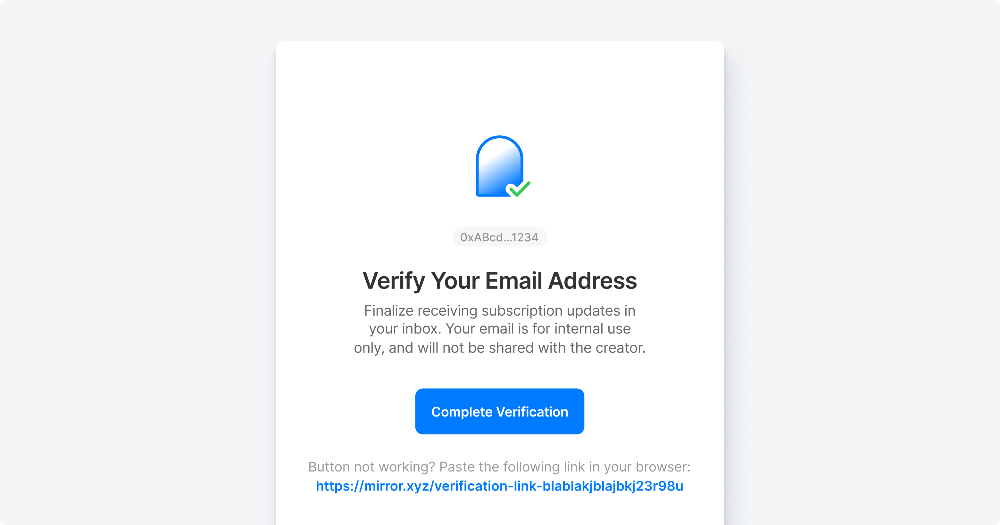

With the recent release of writing NFTs, creators were publishing more than ever — but without any distribution mechanics. Creators are forced to tweet out the collectable entry’s link in hopes for visibility and conversion.
Problem
Creators do not have a way to notify their audience when new writing NFTs are published, often leading to readers being late to the party and missing out. A distribution mechanic could also increase retention.
Solution
'Web3 Subscriptions' helps creators cultivate a dedicated community of readers by publishing collectable entries directly to their inbox, and getting visibility into their audience..
With web3 subscriptions, you can now:
Receive notifications via email as soon as your favorite creator publishes a collectable
Strengthen relationships with creator audiences with more direct content distribution.
Gain visibility into your web3 audience with wallet addresses and email lists, together.
Details
User accounts are only authenticated with wallets, so we thought deeply on how to link user emails to complete the subscribing journey while optimizing for conversion.
We designed the subscriptions feature to be a natural extension of the platform’s existing design system. Thinking through edge cases and scaling the collection flow was crucial.
Privacy and safety concerns were also thought through, email verification systems were put in place to prevent bad actors and phishing attacks.

Impact
The web3 subscriptions feature has been a major driver of growth for Mirror, empowering creators to build sustainable, loyal communities.
This feature led to our follow up called Subscribe to Mint, which allowed creators to mint subscriber-gated NFTs for exclusive perks and benefit
This not only boosted subscriptions, but also led to significant revenue for creators overnight. You can experience NFT embeds for yourself by visiting Mirror and creating an entry.